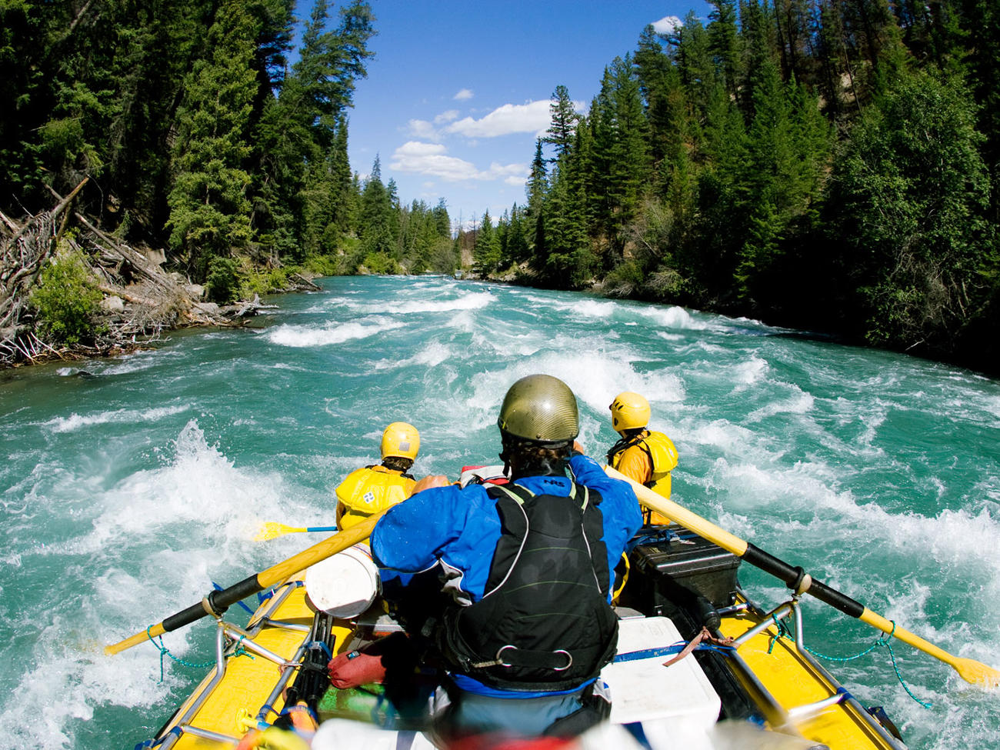
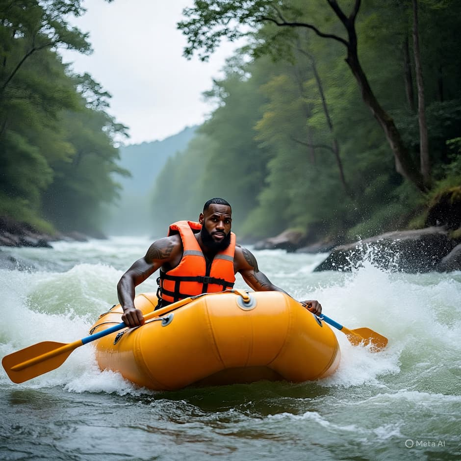

At Los Rapids, we are dedicated to providing our customers with the best rafting experience possible. Our mission is to create unforgettable memories while ensuring safety and fun for all skill levels, from beginners to experts. We believe in the power of nature and adventure to bring people together and foster a sense of community.

